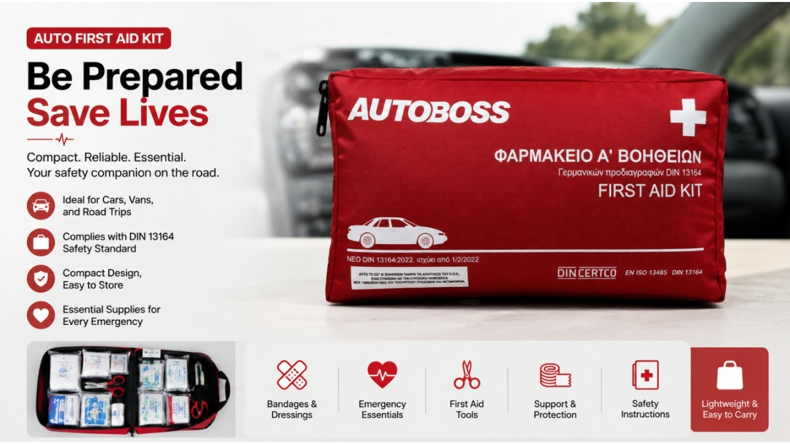

Before Importing Vehicle First Aid Kits for Europe, Read This Procurement Checklist
JUL 19, 2026

A few months ago, I spoke with a distributor preparing for a public tender in Europe.
They had already selected a product.
The samples looked fine.
The pricing was within budget.
But then the buyer said something that changed the entire direction of the project:
"We don't just need a product. We need a kit that will pass procurement review."
And that is where many importers quietly run into trouble.
Because in European automotive and industrial procurement, success is not only about the product itself.
It is about whether the product can survive the entire approval process - from internal review to final customer acceptance.
Here is a simple checklist experienced buyers usually go through before confirming an order.
1. Does the Product Match the Actual Procurement Requirement?
One of the most common mistakes in vehicle first aid kit sourcing is assuming "one specification fits all".
In reality, requirements can vary depending on:
- Fleet operator policies
- National market expectations
- Tender documentation
- End-customer internal safety standards
Before placing an order, experienced buyers usually confirm: "Is this kit aligned with the actual procurement specification, or just a general market version?"
This avoids the most expensive mistake: producing inventory that looks correct but is not accepted in the final bid.
2. Is the Configuration Suitable for the End User?
Not all vehicle first aid kits are used in the same way.
For example:
| End User Type | Typical Expectation |
|---|---|
| Passenger vehicles | Compact, cost-efficient kits |
| Fleet operators | Standardized, easy-to-replace kits |
| Industrial users | Expanded trauma response components |
| Public tenders | Strict BOM and documentation compliance |
A common issue occurs when suppliers provide a "general kit" that does not match the end-user reality.
Experienced importers often adjust configuration based on the actual use scenario - not just catalog description.
3. Can This Product Pass Tender Evaluation?
In many European procurement cases, especially in public or fleet tenders, the decision is not made by one person.
It often involves:
- Procurement department
- Technical review team
- Compliance check
- End-user validation
A kit that looks good commercially may still fail if:
- Documentation is incomplete
- Product specification is unclear
- Configuration does not match tender requirements
That is why experienced buyers usually ask suppliers for structured product documentation early in the process.
4. Are Supply Chain Factors Under Control?
Beyond the product itself, procurement teams often evaluate operational risks such as:
| Risk Area | Why It Matters |
|---|---|
| Lead time stability | Impacts tender delivery commitments |
| Production consistency | Avoids batch variation issues |
| Packaging durability | Affects logistics and retail handling |
| Shelf life management | Reduces inventory depreciation risk |
In many cases, procurement failure is not caused by product quality - but by supply chain unpredictability.
5. Can the Supplier Support the Project Beyond Delivery?
One overlooked factor in international procurement is supplier support after shipment.
Experienced buyers often consider:
- Can the supplier respond to follow-up questions?
- Can they support documentation requests for tenders?
- Can they adjust configurations for repeat orders?
- Can they help resolve customer inquiries?
Because in many cases, the real workload begins after the first order is shipped.
Procurement Checklist Summary
Before placing an order for vehicle first aid kits in Europe, experienced buyers typically verify:
| Checklist Item | Key Question |
|---|---|
| Specification match | Does this meet the actual tender requirement? |
| End-user fit | Is this suitable for the final application scenario? |
| Tender readiness | Will this pass internal procurement review? |
| Supply chain stability | Can delivery and production be relied upon? |
| Supplier support | Will I get help after the order is placed? |
How GoSafeMed Supports Importers
At GoSafeMed, we understand that importing vehicle first aid kits is rarely just a purchasing decision.
It is usually part of a larger procurement process involving tenders, fleet requirements, and end-customer expectations.
That is why we focus on providing:
- Structured product configurations for different market needs
- OEM and labeling flexibility for tender requirements
- Practical documentation support where needed
- Stable production planning for repeat orders
Our goal is simple:
To help importers reduce uncertainty in procurement decisions.
Final Thoughts
In most European procurement projects, the winning supplier is not always the cheapest.
It is the one that fits the checklist.
Because in the end, buyers are not just choosing a product.
They are choosing a level of risk they are comfortable managing.